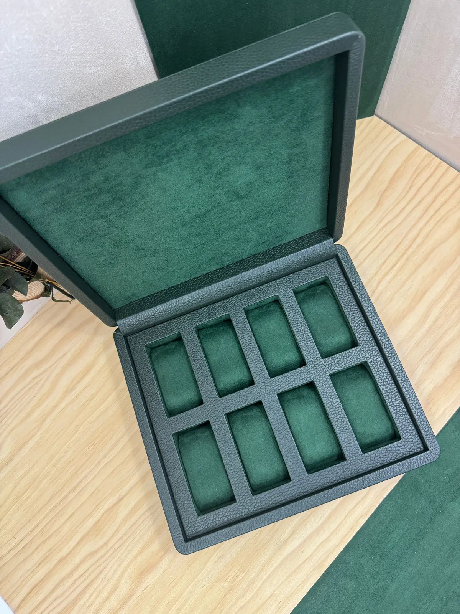
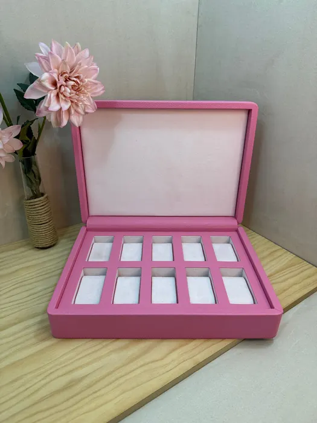
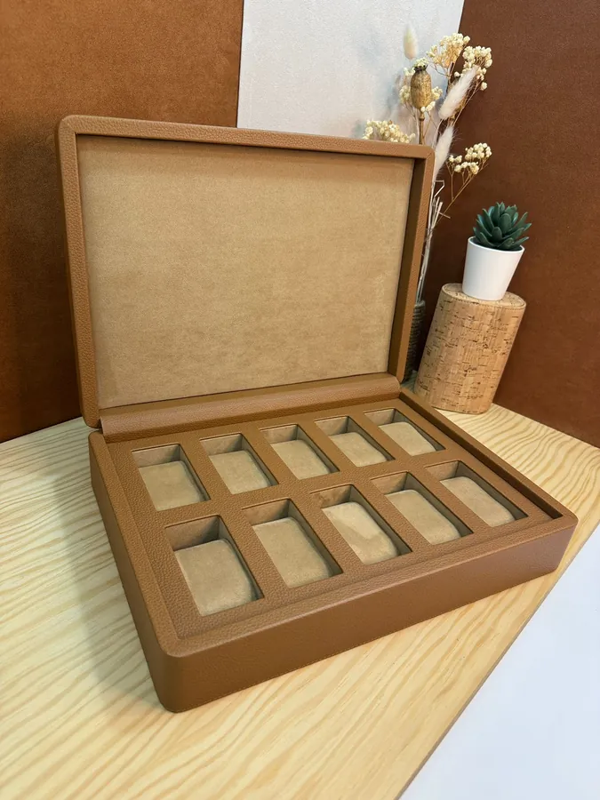
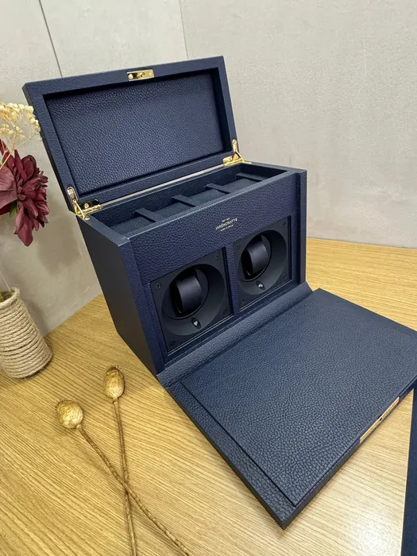
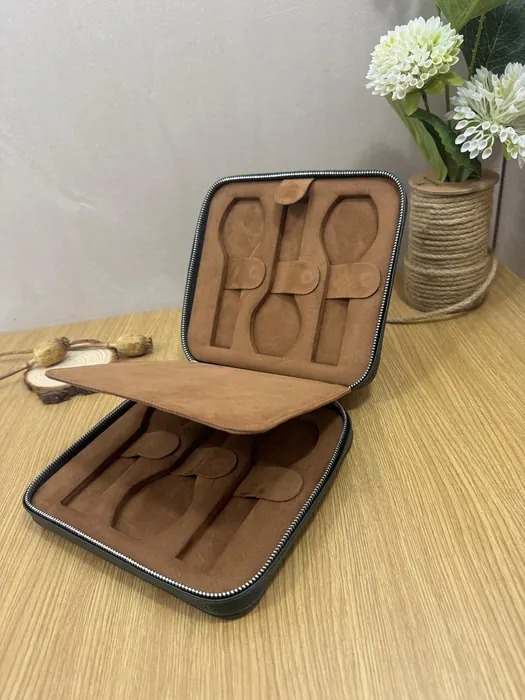
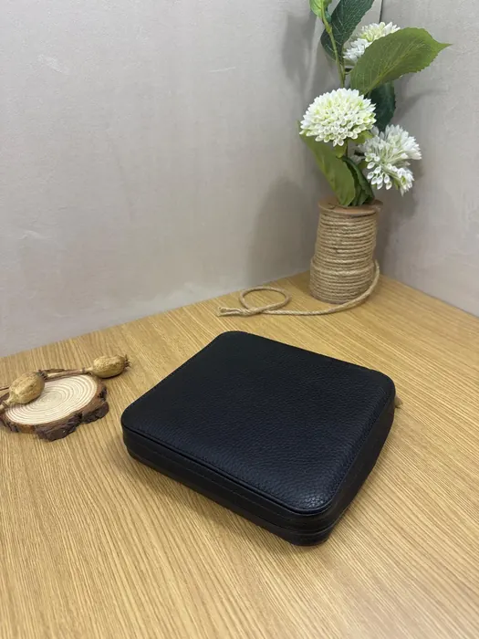
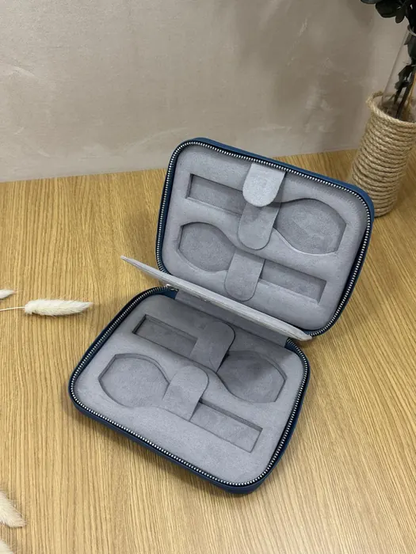
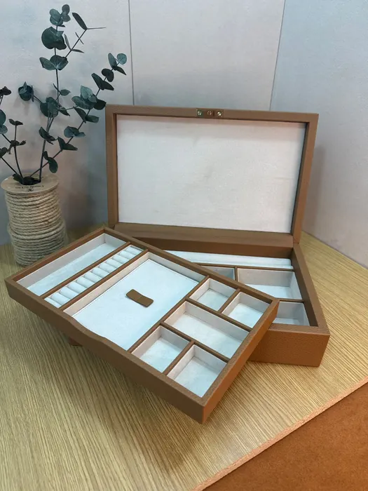

Watch winder SwissKubik · 9 relojes · Marino
Watch winder SwissKubik · 9 relojes · Marino
3.050 IVA incluido

Encuentra tu caja
Dinos cuántos guardas y te enseñamos las cajas donde caben, con el color que más te guste. Si son automáticos, también los watch winder que les dan cuerda.

ClásicaVer la colección PremiumVer la colección
PremiumVer la colección
Desde 1980
Transformamos la piel en piezas únicas con más de cuatro décadas de experiencia. Somos especialistas en cajas para relojes, pensadas para proteger y acompañar las colecciones de los amantes de la relojería.
Watch winder SwissKubik · 9 relojes · Marino

Watch winder SwissKubik · 6 relojes · Marino Watch winder SwissKubik · 6 relojes · Verde
Watch winder SwissKubik · 6 relojes · Verde
 Watch winder SwissKubik · 9 relojes · Verde
Watch winder SwissKubik · 9 relojes · Verde

Viaje ultra fino · 6 relojes · Verde
Viaje ultra fino · 6 relojes · Negro Viaje ultra fino · 4 relojes · Marrón
Viaje ultra fino · 4 relojes · Marrón

Viaje ultra fino · 4 relojes · Azul Joyero mediano con bandeja extraible cuero verde
Joyero mediano con bandeja extraible cuero verde
 Joyero grande con bandeja extraible cuero aqua
Joyero grande con bandeja extraible cuero aqua
 Joyero grande con bandeja extraible cuero salmón
Joyero grande con bandeja extraible cuero salmón
 Joyero grande con bandeja extraible cuero camel
Joyero grande con bandeja extraible cuero camel
 Joyero grande con bandeja extraible cuero fucsia
Joyero grande con bandeja extraible cuero fucsia
 Joyero mediano con bandeja extraible cuero coco marrón
Joyero mediano con bandeja extraible cuero coco marrón
 Joyero mediano con bandeja extraible cuero Fucsia
Joyero mediano con bandeja extraible cuero Fucsia

Joyero mediano con bandeja extraible cuero camel